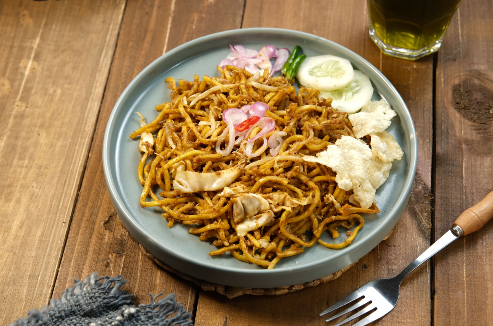

Masakan nusantara dikenal dengan cita rasa lezat dan menggugah selera. Hampir tiap daerah memiliki makanan khas masing-masing dengan cita rasa yang unik. Uniknya, tiap daerah bisa saja punya lebih dari satu masakan nusantara yang enak dan wajib Anda coba.Maka tidak heran jika kuliner Indonesia terkenal hingga seluruh dunia. Ini tak lepas dari bumbu rempah-rempah yang digunakan dalam berbagai masakan nusantara tersebut. Bahkan, wisata kuliner menjadi agenda wajib ketika datang ke daerah-daerah tertentu.
Beberapa masakan khas nusantara
- 1. Mie Aceh 
- Masakan nusantara khas Aceh ini punya tekstur yang tebal dan dicampur dengan irisan daging serta bumbu rempah yang kuat. Mie Aceh biasa disajikan dengan digoreng, direbus atau ditumis. Tentunya, bisa juga disajikan dengan tambahan seafood seperti kepiting, udang dan cumi.
- 2. Rendang
- Masakan nusantara dari Sumatera Barat ini pernah dinobatkan sebagai makanan terlezat di dunia. Makanan dari daging sapi yang dimasak menggunakan santan kelapa serta bumbu rempah selama berjam-jam ini memang begitu terkenal. Rasanya yang gurih dan juga nikmat, sukses membuat makanan khas daerah Sumatera Barat ini begitu disukai banyak orang.
- 3. Bika Ambon
- Meski namanya Bika Ambon, tapi masakan nusantara ini bukan berasal dari Ambon. Kue ini berasal dari Sumatera Utara dan banyak dijual di Kota Medan sebagai oleh-oleh. Kue berwarna kuning ini punya tekstur yang lembut dan manis.
- 4. Gulai Belacan
- Gulai Belacan adalah masakan nusantara dari Riau. Belacan sendiri adalah nama lain dari terasi yang begitu dikenal oleh orang Sumatera. Makanan khas Riau ini dibuat dari bahan dasar kuah yang dicampur terasi. Di dalamnya ada isian berupa daging, udang atau ikan.
- 5. Otak-Otak
- Masakan nusantara lain masih dari Kepulauan Riau yaitu otak-otak. Masakan ini terbuat dari bahan utama seafood dan merupakan makanan hasil laut yang diolah serta dibungkus dengan daun pisang.